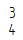
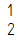

Format a fraction, superscript, or subscript
When creating or editing text in a text box, you can use the Stack dialog box and the AutoStack dialog box to format fractions, superscript, and subscript text.
Create a fraction from existing text
-
In the text box, select the text that you want to format as a fraction or as tolerance.
-
On the Text command bar, click Stack
 .
. -
In the Stack dialog box, under Style, select the Stacked, Skewed, Tolerance, or Linear format to apply to the text.
-
Click OK.
The text expression updates to display using the format you selected.
Tip:If you need to update the position of the fraction with respect to surrounding text, reopen the Stack dialog box and choose one of the options under Align normal text with.
Create a fraction from new text
-
On the Text command bar, click Stack
.The Stack dialog box is displayed.
-
In the Upper box, type the content for the numerator.
-
In the Lower box, type the content for the denominator.
-
In the Stack dialog box, under Style, select the stack format you want to apply to the fraction.
For an existing fraction, you can:
-
Click the fraction to select the text for editing.
-
Double-click the fraction to open the Stack dialog box.
Automatically format numbers as you type
-
In a text box, type two numbers with one of the following separators between them, and then press Enter or Tab.
-
/
-
#
-
^
Example:For example, type 1/2 and press Enter.
-
-
In the AutoStack dialog box, do the following:
-
Select the check box, Automatically stack text expressions 1/2, 1#2, and 1^2 as you type.
-
From each of the Convert to lists, select the formatting that you want to apply to text expressions whenever they are entered in a text box. The four stacking formats that you can choose are illustrated in the following table.
Example:If you want the carat symbol (^) to initiate stacked tolerance formatting, then from the Convert 1^2 to: list, select Tolerance.
Then when you type 3^4 in the text box, the numbers are converted automatically to this format:

Stack format
Display result
Stacked

Skewed

Tolerance

Linear
 Tip:
Tip:To prevent the AutoStack dialog box from reopening every time you type one of the text expressions, select the check box, Do not show this dialog again.
-
Format a superscript or subscript
-
Choose the Text command
 to create a new text box, or double-click a text box to edit it.
to create a new text box, or double-click a text box to edit it. -
Click in the text box where you want to create a superscript or subscript.
-
On the Text command bar, click Stack.
-
In the Stack dialog box, do the following:
-
Create a superscript
-
In the Upper box, type or paste the superscript content.
-
Under Styles, click Tolerance.
-
-
Create a subscript
-
In the Lower box, type or paste the subscript content.
-
Under Styles, click Tolerance.
-
-